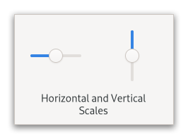

Gtk.Scale¶
Example¶
- Subclasses:
None
Methods¶
- Inherited:
Gtk.Range (22), Gtk.Widget (181), GObject.Object (37), Gtk.Accessible (16), Gtk.Buildable (1), Gtk.Orientable (2)
- Structs:
class |
|
class |
|
|
|
|
|
|
|
|
|
|
|
|
|
|
|
|
|
|
Virtual Methods¶
- Inherited:
Gtk.Range (5), Gtk.Widget (25), GObject.Object (7), Gtk.Accessible (6), Gtk.Buildable (9), Gtk.AccessibleRange (1)
Properties¶
- Inherited:
Gtk.Range (6), Gtk.Widget (34), Gtk.Accessible (1), Gtk.Orientable (1)
Name |
Type |
Flags |
Short Description |
|---|---|---|---|
r/w/en |
|||
r/w/en |
|||
r/w/en |
|||
r/w/en |
Signals¶
- Inherited:
Fields¶
- Inherited:
Name |
Type |
Access |
Description |
|---|---|---|---|
parent_instance |
r |
Class Details¶
- class Gtk.Scale(**kwargs)¶
- Bases:
- Abstract:
No
- Structure:
A
GtkScaleis a slider control used to select a numeric value.An example
Gtk.ScaleTo use it, you’ll probably want to investigate the methods on its base class, [class`Gtk`.Range], in addition to the methods for
GtkScaleitself. To set the value of a scale, you would normally use [method`Gtk`.Range.set_value]. To detect changes to the value, you would normally use the [signal`Gtk`.Range::value-changed] signal.Note that using the same upper and lower bounds for the
GtkScale(through theGtkRangemethods) will hide the slider itself. This is useful for applications that want to show an undeterminate value on the scale, without changing the layout of the application (such as movie or music players).GtkScalesupports a custom<marks>element, which can contain multiple<mark\>elements. The “value” and “position” attributes have the same meaning as [method`Gtk`.Scale.add_mark] parameters of the same name. If the element is not empty, its content is taken as the markup to show at the mark. It can be translated with the usual ”translatable” and “context” attributes.- Shortcuts and Gestures
GtkPopoverMenusupports the following keyboard shortcuts:Arrow keys, <kbd>+</kbd> and <kbd>-</kbd> will increment or decrement by step, or by page when combined with <kbd>Ctrl</kbd>.
<kbd>PgUp</kbd> and <kbd>PgDn</kbd> will increment or decrement by page.
<kbd>Home</kbd> and <kbd>End</kbd> will set the minimum or maximum value.
- CSS nodes
`` scale[.fine-tune][.marks-before][.marks-after] ├── [value][.top][.right][.bottom][.left] ├── marks.top │ ├── mark │ ┊ ├── [label] │ ┊ ╰── indicator ┊ ┊ │ ╰── mark ├── marks.bottom │ ├── mark │ ┊ ├── indicator │ ┊ ╰── [label] ┊ ┊ │ ╰── mark ╰── trough
├── [fill] ├── [highlight] ╰── slider
GtkScalehas a main CSS node with name scale and a subnode for its contents, with subnodes named trough and slider.The main node gets the style class .fine-tune added when the scale is in ‘fine-tuning’ mode.
If the scale has an origin (see [method`Gtk`.Scale.set_has_origin]), there is a subnode with name highlight below the trough node that is used for rendering the highlighted part of the trough.
If the scale is showing a fill level (see [method`Gtk`.Range.set_show_fill_level]), there is a subnode with name fill below the trough node that is used for rendering the filled in part of the trough.
If marks are present, there is a marks subnode before or after the trough node, below which each mark gets a node with name mark. The marks nodes get either the .top or .bottom style class.
The mark node has a subnode named indicator. If the mark has text, it also has a subnode named label. When the mark is either above or left of the scale, the label subnode is the first when present. Otherwise, the indicator subnode is the first.
The main CSS node gets the ‘marks-before’ and/or ‘marks-after’ style classes added depending on what marks are present.
If the scale is displaying the value (see [property`Gtk`.Scale:draw-value]), there is subnode with name value. This node will get the .top or .bottom style classes similar to the marks node.
- Accessibility
GtkScaleuses theGtk.AccessibleRole.SLIDERrole.- classmethod new(orientation, adjustment)[source]¶
- Parameters:
orientation (
Gtk.Orientation) – the scale’s orientation.adjustment (
Gtk.AdjustmentorNone) – the [class`Gtk`.Adjustment] which sets the range of the scale, orNoneto create a new adjustment.
- Returns:
a new
GtkScale- Return type:
Creates a new
GtkScale.
- classmethod new_with_range(orientation, min, max, step)[source]¶
- Parameters:
orientation (
Gtk.Orientation) – the scale’s orientation.min (
float) – minimum valuemax (
float) – maximum valuestep (
float) – step increment (tick size) used with keyboard shortcuts
- Returns:
a new
GtkScale- Return type:
Creates a new scale widget with a range from min to max.
The returns scale will have the given orientation and will let the user input a number between min and max (including min and max) with the increment step. step must be nonzero; it’s the distance the slider moves when using the arrow keys to adjust the scale value.
Note that the way in which the precision is derived works best if step is a power of ten. If the resulting precision is not suitable for your needs, use [method`Gtk`.Scale.set_digits] to correct it.
- add_mark(value, position, markup)[source]¶
- Parameters:
value (
float) – the value at which the mark is placed, must be between the lower and upper limits of the scales’ adjustmentposition (
Gtk.PositionType) – where to draw the mark. For a horizontal scale,Gtk.PositionType.TOPandGtk.PositionType.LEFTare drawn above the scale, anything else below. For a vertical scale,Gtk.PositionType.LEFTandGtk.PositionType.TOPare drawn to the left of the scale, anything else to the right.markup (
strorNone) – Text to be shown at the mark, using Pango markup
Adds a mark at value.
A mark is indicated visually by drawing a tick mark next to the scale, and GTK makes it easy for the user to position the scale exactly at the marks value.
If markup is not
None, text is shown next to the tick mark.To remove marks from a scale, use [method`Gtk`.Scale.clear_marks].
- get_digits()[source]¶
- Returns:
the number of decimal places that are displayed
- Return type:
Gets the number of decimal places that are displayed in the value.
- get_draw_value()[source]¶
- Returns:
whether the current value is displayed as a string
- Return type:
Returns whether the current value is displayed as a string next to the slider.
- get_layout()[source]¶
- Returns:
the [class`Pango`.Layout] for this scale, or
Noneif the [property`Gtk`.Scale:draw-value] property isFalse.- Return type:
Pango.LayoutorNone
Gets the
PangoLayoutused to display the scale.The returned object is owned by the scale so does not need to be freed by the caller.
- get_layout_offsets()[source]¶
- Returns:
- x:
location to store X offset of layout
- y:
location to store Y offset of layout
- Return type:
Obtains the coordinates where the scale will draw the
PangoLayoutrepresenting the text in the scale.Remember when using the
PangoLayoutfunction you need to convert to and from pixels usingPANGO_PIXELS()orPANGO_SCALE.If the [property`Gtk`.Scale:draw-value] property is
False, the return values are undefined.
- get_value_pos()[source]¶
- Returns:
the position in which the current value is displayed
- Return type:
Gets the position in which the current value is displayed.
- set_digits(digits)[source]¶
- Parameters:
digits (
int) – the number of decimal places to display, e.g. use 1 to display 1.0, 2 to display 1.00, etc
Sets the number of decimal places that are displayed in the value.
Also causes the value of the adjustment to be rounded to this number of digits, so the retrieved value matches the displayed one, if [property`Gtk`.Scale:draw-value] is
Truewhen the value changes. If you want to enforce rounding the value when [property`Gtk`.Scale:draw-value] isFalse, you can set [property`Gtk`.Range:round-digits] instead.Note that rounding to a small number of digits can interfere with the smooth autoscrolling that is built into
GtkScale. As an alternative, you can use [method`Gtk`.Scale.set_format_value_func] to format the displayed value yourself.
- set_draw_value(draw_value)[source]¶
-
Specifies whether the current value is displayed as a string next to the slider.
- set_format_value_func(func, *user_data)[source]¶
- Parameters:
func (
Gtk.ScaleFormatValueFuncorNone) – function that formats the value
func allows you to change how the scale value is displayed.
The given function will return an allocated string representing value. That string will then be used to display the scale’s value.
If
Noneis passed as func, the value will be displayed on its own, rounded according to the value of the [property`Gtk`.Scale:digits] property.
- set_has_origin(has_origin)[source]¶
-
Sets whether the scale has an origin.
If [property`Gtk`.Scale:has-origin] is set to
True(the default), the scale will highlight the part of the trough between the origin (bottom or left side) and the current value.
- set_value_pos(pos)[source]¶
- Parameters:
pos (
Gtk.PositionType) – the position in which the current value is displayed
Sets the position in which the current value is displayed.
- do_get_layout_offsets() virtual¶
- Returns:
- x:
location to store X offset of layout
- y:
location to store Y offset of layout
- Return type:
Obtains the coordinates where the scale will draw the
PangoLayoutrepresenting the text in the scale.Remember when using the
PangoLayoutfunction you need to convert to and from pixels usingPANGO_PIXELS()orPANGO_SCALE.If the [property`Gtk`.Scale:draw-value] property is
False, the return values are undefined.
Property Details¶
- Gtk.Scale.props.digits¶
- Name:
digits- Type:
- Default Value:
1- Flags:
The number of decimal places that are displayed in the value.
- Gtk.Scale.props.draw_value¶
- Name:
draw-value- Type:
- Default Value:
- Flags:
Whether the current value is displayed as a string next to the slider.
- Gtk.Scale.props.has_origin¶
- Name:
has-origin- Type:
- Default Value:
- Flags:
Whether the scale has an origin.
- Gtk.Scale.props.value_pos¶
- Name:
value-pos- Type:
- Default Value:
- Flags:
The position in which the current value is displayed.